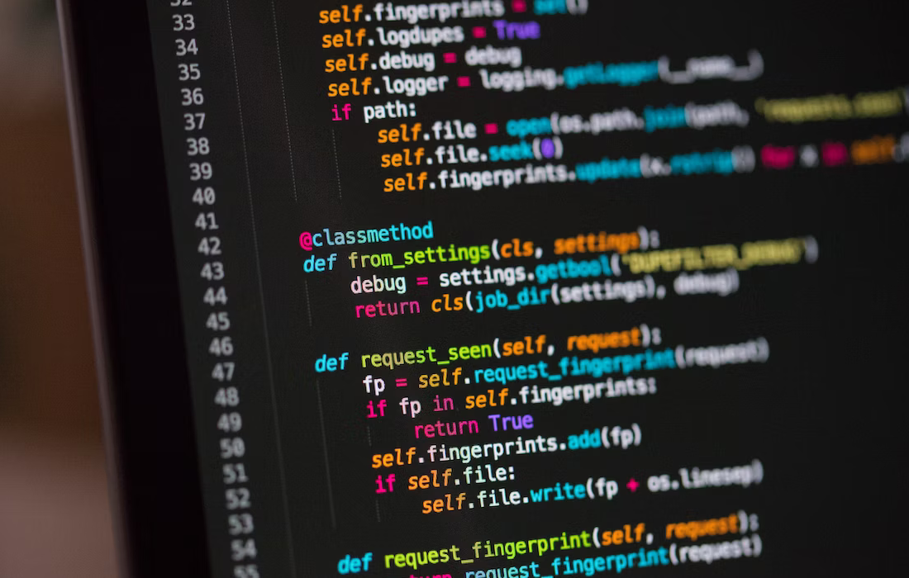

آنچه از پایتون در دیتاساینس میخواهیم

پایتون یک زبان برنامهنویسی سطح بالا است که برای اهداف مختلفی از جمله علوم داده، توسعه وب، هوش مصنوعی و غیره به کار میرود. این زبان توسط گیدو ون راسوم ایجاد شد و در سال ۱۹۹۱ برای اولین بار منتشر شد. پایتون به خاطر سادگی و قابل خواندن بودن آن شناخته میشود که آن را یک انتخاب عالی برای مبتدیان و برنامهنویسان حرفهای میکند.
- پایههای پایتون: این شامل نحوه نصب پایتون، متغیرها، نوع دادهها، عملگرها و ساختارهای کنترلی است. این مفاهیم اولیه درک و استفاده از پایتون برای علوم داده بسیار مهم هستند.
- کتابخانههای علوم داده در پایتون: پایتون از کتابخانههای قدرتمندی برای علوم داده و محاسبات علمی پشتیبانی میکند. مثالهایی از این کتابخانهها شامل NumPy برای عملیات عددی، Pandas برای تحلیل و پردازش دادهها، و Matplotlib برای تولید نمودارها و تصاویر است.
- آمادهسازی داده: این بخش شامل مراحل مختلفی از جمله خواندن داده از منابع مختلف (مثل فایلهای CSV یا پایگاهدادهها)، پاکسازی دادهها، جداکردن ویژگیها، تبدیل نوع دادهها و نرمالسازی دادهها است.
- تجزیه و تحلیل داده: در این بخش، شما یاد خواهید گرفت که از ابزارهای موجود در کتابخانههای علوم داده پایتون برای انجام تجزیه و تحلیل داده استفاده کنید. این شامل تحلیل ویژگیها، تجزیه تفسیری، استخراج الگوها، و استفاده از روشهای مختلفی مانند کاوش داده و هوش مصنوعی است.
کارگاه آموزشی آنچه از پایتون در دیتاساینس میخواهیم
من برنامه نویس رایانه نیستم، اما چندتا مورد از پایتون که به علوم داده اعمال میشوند، نیاز داریم. پس، بیایید با هم آنها را مطالعه کنیم. شما میتوانید لیست موضوعات پیشنهادی را در زیر مشاهده کنید
موضوعات احتمالی مورد بحث در هر جلسه
زمان پیشنهادی هر جلسه: 4 ساعت
| جلسه |
مباحث |
| 1 |
معرفی
Python Bootcamp:
Environment Set up (Anaconda, Jupyter Notebook)
List, Tuple, Set, Dictionary, Boolean, String
|
| 2 |
For loop
If, elif, else
Function (args & kwargs)
|
| 3 |
Numpy
Pandas |
| 4 |
Matplotlib.pyplot
Seaborn
|